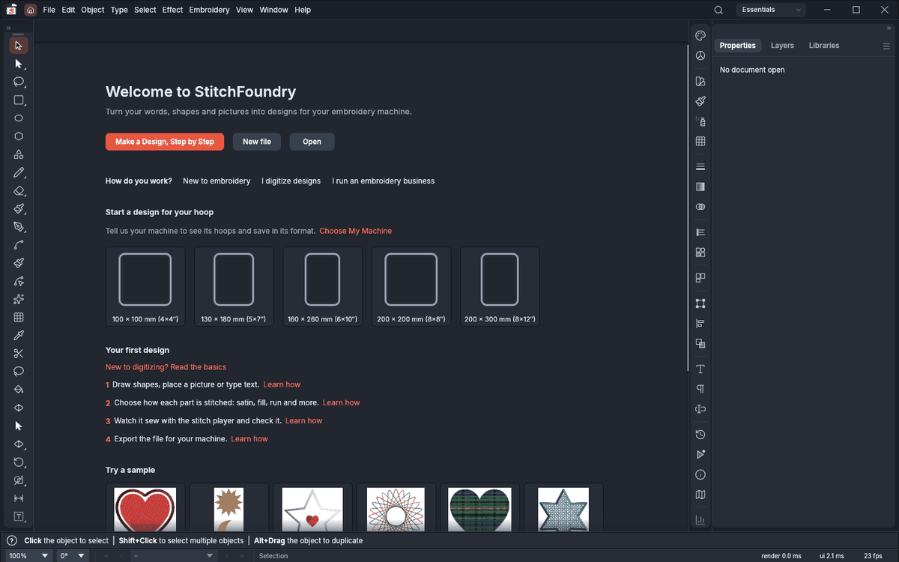

Turn your ideas into embroidery.
StitchFoundry makes machine-embroidery designs from words, shapes and photos, and saves the file your machine reads. It's free, open source, and runs on Mac, Windows, Linux and in your browser.

Everything from the first stitch to the machine
Start with the step-by-step guide, or draw and digitize by hand when you want full control.
Make a design, step by step
Pick what to make, your hoop and your fabric, and StitchFoundry sets the density, underlay and pull compensation for you.
Photos to stitches
Cut the subject out of its background in one click, then digitize it, with a white border round it like a sticker or patch if you like.
Lettering and monograms
Built-in embroidery fonts and your own fonts, words on arcs and circles, monograms and team names from a spreadsheet.
Watch it sew
A 3D thread view and a stitch player show the design sewing in order, and you can save it as an animation to share.
Appliqué and in-the-hoop
Appliqué with placement, tack-down and cover stitches, and 14 in-the-hoop projects: mug rugs, coasters, key fobs, zipper pouches and more.
Quilting
Quilt blocks, stipple and echo backgrounds, endless borders that re-hoop along their marks.
Lace, tartan, spirographs
Free-standing lace, woven-looking tartan fills, spiro patterns, wave fills, thread blends and more.
For embroidery businesses
Stitch counts, sewing time, thread and cost estimates, quotes, job orders and worksheets.
AI help, if you want it
Describe a design and get it drawn and digitized, or send photos of a sew-out and get the design fixed. Paid in credits, or with your own key.

Works with your machine
Tell StitchFoundry your machine once: it offers your hoops and saves in your machine's format, straight to its USB stick.
| Machine | Files |
|---|---|
| Brother, Baby Lock | PES, PEC |
| Janome, Elna | JEF, SEW |
| Husqvarna Viking, Pfaff | VP3, HUS, PCS |
| Bernina | EXP |
| Singer | XXX |
| Commercial machines (Tajima and others) | DST, DSB, U01, TAP |
Got an older machine that takes memory cards? StitchFoundry saves the right file for your card writer box's own software.
Questions
Is it really free?
Yes. StitchFoundry is open source (MIT or Apache-2.0) and free to download and use. Only the optional AI features cost something: Foundry credits, or your own AI key.
Which computers does it run on?
Mac (Apple silicon and Intel), Windows, Linux and FreeBSD, and a version in your browser.
Can I open designs I already have?
Yes: PES, DST, JEF, EXP, VP3, XXX and more open as stitches, and SVG, PDF and images open as artwork to digitize.
Where can I share or sell my designs?
On MakerFoundry, our marketplace for embroidery and laser-cut designs: publish straight from StitchFoundry.